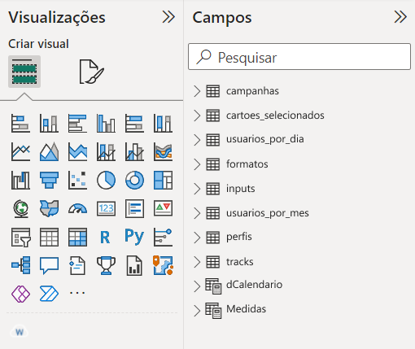

Introdução
Em um dia recente, eu descobri que um dos dashboards que estavam publicados em nosso ambiente de produção do Power BI Online havia sofrido um erro de atualização. Logo, eu prontamente parei o que estava fazendo e comecei a investigar o motivo do erro, até porque: 1) o nosso cliente depende dos dados desse dashboard ; e 2) erros em produção não são legais!
Nesse post, eu quero mostrar como esse tipo de erro de atualização pode ser um forte sinal de que você precisa repensar o design de seu dashboard. Em outras palavras, vou descrever como você pode evitar esse tipo erro, ao pensar muito bem em como o design de seu dashboard atende as necessidades de seu cliente.
Contexto
Bem, você já sabe que tudo começou por um erro durante a atualização de um dashboard publicado no Power BI Online. Porém, este não era qualquer erro, e sim, um erro de falta de memória:
Perceba pela mensagem acima, que o motivo do erro foi uma falta de mem√≥ria (insufficient memory) nos clusters responsáveis por executar a atualiza√ß√£o. O que isso significa? Significa que este dashboard estava pedindo por um volume tão grande, mas tão grande de dados durante a atualiza√ß√£o, que os clusters que estavam executando essa atualiza√ß√£o não tinham mais espa√ßo para alocar esse volume tão grande de dados. Por isso, o Power BI decidiu simplesmente parar a atualiza√ß√£o antes que algum computador explodisse üòÖ;
Hora de explorar o terreno desconhecido
Nesse dia, eu estava em minha primeira semana em uma nova equipe, e, eu não conhecia esse dashboard. Em outras palavras, eu havia herdado esse dashboard, que foi criado pelos analistas anteriores dessa equipe. Logo, eu precisava abrir o .pbix desse dashboard e começar a investigar, tentando descobrir que mistérios e perigos estão escondidos dentro dele.
Inicialmente, percebi oito tabelas associadas ao dashboard que foram puxadas diretamente dos nossos databases SQL (campanhas, cartoes_selecionados, usuarios_por_dia, formatos, inputs, usuarios_por_mes, perfis e tracks), as quais estão expostas na imagem abaixo1. Além delas, temos outras duas tabelas calculadas no próprio .pbix, através de DAX (dCalendario e Medidas).

.pbixDecidi simplesmente clicar no botão de Atualizar. Já que o erro ocorreu durante a atualização, imaginei que seria mais simples descobrir a fonte do problema dessa forma.
A maioria das tabelas atualizaram rapidamente. Porém, a tabela input ainda estava atualizando. Em resumo, essa tabela continha todas as mensagens digitadas por todos os usuários que acessaram o nosso sistema.
O tempo foi passando, e após 3 horas com a atualização rodando em meu computador, o Power BI já havia puxado mais de 80 milhões de linhas para essa única tabela. Decidi verificar se o recurso de Atualização incremental estava ligado para essa tabela input, e, percebi que ele estava desligado.
Conclusão
Portanto, a fonte do problema estava claro. Como o recurso de “Atualização incremental” estava desligado para essa tabela input, a cada atualização, o Power BI Online estava recalculando toda a tabela input de uma vez só.
Isso significa que, todos os dias, o Power BI estava coletava todas as 80 milhões de linhas dessa tabela input. Devido a este alto volume de dados, o serviço do Power BI decidiu interromper a atualização.

A solução simples e suja (o famoso quick and dirty)
Um jeito simples de resolver esse erro de falta de memória, seria simplesmente não carregar todas as 80 milhões de linhas de uma vez só! E sim, carregar essas linhas aos poucos.
Para isso, poderíamos ligar a atualização incremental nessa tabela input. Desse modo, cada atualização vai atualizar apenas os dados dos últimos dias (ao invés de atualizar a tabela inteira), e em seguida, começamos a carregar os dados aos poucos para o dashboard.
Por exemplo, na primeira atualização, tentamos puxar os dados do primeiro mês, depois, na próxima atualização, puxamos os dados do segundo mês, e assim por diante, até puxarmos todas as 80 mihões de linhas.
Contudo, isso não é uma solução de fato!
Atualizar 80 milhões de linhas não é prático, não é rápido, e é difícil de manter e testar. Se por algum motivo, você precisar atualizar todos os dados de seu dashboard2, você vai muito provavelmente perder uma tarde, talvez um dia inteiro de trabalho só para completar a atualização.
Antes de tudo, pare um pouco e pense
Primeiro de tudo, pare! E pense… tente entender o porquê você está puxando milhões e milhões de linhas. Você realmente precisa desse volume tão grande de dados em seu dashboard? É muito provável que não!
Insight 1: Se você está puxando milhões e milhões de linhas para um dashboard, é provável que você não tenha entendido o que é um dashboard e qual o seu propósito.
Vamos pensar um pouco sobre user experience
Por um momento, vamos adotar o papel de um UX, e refletir sobre a experiência dos usuários que consomem o nosso dashboard. É esquisito pensar dessa forma, entretanto, às vezes, nós nos esquecemos que pessoas de verdade usam o nosso produto (nesse caso, o dashboard) e se baseiam nele diariamente para desempenhar trabalhos e planejamentos importantes. Portanto, é muito importante que eles tenham uma experiência agradável utilizando o nosso dashboard.
- Definindo o público-alvo: Primeiro, quem utiliza o nosso dashboard?
Na maioria das vezes, quem está consumindo os nossos dashboards são gerentes de alguma área. Gente importante, que tem pouco tempo no dia, e que lidam com várias tarefas e responsabilidades ao mesmo tempo.
É justamente por essa escassez de tempo e atenção que, em geral, gerentes gostam muito de dashboards. Eles gostam de entrar num dashboard, e rapidamente visualizar todos os indicadores que eles precisam acompanhar. Com isso, este gerente não precisa gastar horas e horas caçando números em diferentes lugares, e com diferentes pessoas.
Por isso, um dashboard tem que ser rápido. Todo gerente tem pressa, então, a página inicial do dashboard precisa carregar rápido, e navegar pelas diferentes páginas e visões do dashboard também precisa ser uma experiência rápida e flúida. Ninguém gosta de uma página que demora 5 minutos para carregar, muito menos um gerente.
É por esse mesmo motivo, que cada página de um dashboard precisa ser focada em um tema central, e manter o mínimo possível de informação que o gerente precisa, da forma mais clara possível.
Se uma mesma página mistura diferentes temas, o leitor pode ter dificuldade em navegar pelos indicadores e encontrar o que ele está procurando (ou seja, misturar temas = confusão mental!).
Ah! Achei a página com os indicadores de vendas. Ok. Espera! Por que os indicadores de atendimento estão nessa página? Onde está o número de vendas de maquininhas nesse mês? Ahhh achei! Não, espera… Esse é o número de maquininhas vendidas somente no setor de atendimento, mas eu quero os números de venda em TODOS os setores…
Portanto, dashboards precisam ser rápidos, claros e bem dividos! E se você está puxando um volume muito grande de dados para dentro dele, você com certeza vai impactar negativamente a rapidez desse dashboard. Além disso, é possível que você esteja preenchendo esse dashboard com informação que é irrelevante para o gerente.
Insight 2: Dashboards precisam ser rápidos, claros e bem dividos!
Gerentes querem indicadores e agregados! Não dados brutos…
Gerentes querem acompanhar indicadores e agregados que descrevam de maneira rápida a situação atual do negócio que eles gerem, e das pessoas que estão envolvidas nele.
Logo, porque trazer dados brutos para o dashboard? Porque trazer para o dashboard uma tabela com a lista completa de todos os usuários que visitaram o nosso serviço em todos os dias do ano? Se eu posso simplesmente trazer uma tabela já agregada, com o número de usuários que visitaram o serviço dentro de cada dia.
Insight 3: Gerentes estão interessados em acompanhar indicadores e agregados, ao invés de dados brutos. Portanto, importe os seus dados já agregados para dentro do dashboard.
Isso significa que dados brutos geralmente não devem estar em um dashboard
Isso tudo não significa que gerentes não consomem dados brutos em momento algum. Mas isso significa que um dashboard é geralmente o lugar errado para esses dados brutos.
É até comum em certos momentos um gerente pedir para nós coletarmos um conjunto específico de dados brutos para ele. Mas se você refletir sobre todas as ocasiões onde isso ocorreu, você talvez consiga perceber que essas ocasiões caem em duas categorias diferentes:
o gerente queria investigar um problema bem específico, e é bem provável que esse problema não se repita, logo, ele nunca mais vai precisar desses dados brutos específicos novamente (i.e. foi uma entrega pontual);
o gerente precisa desses dados brutos com certa frequência para alimentar algum fluxo de trabalho que você não conhece, ou está em uma equipe/setor diferente do seu;
Essas duas categorias não justificam incluir dados brutos em um dashboard.
Portanto, na maior parte do tempo, os gerentes em si não precisam do nível elevado de detalhes que dados brutos trazem para gerir o seu negócio. Se eles estão pedindo por dados brutos com frequência, é porque algum analista ou membro mais especializado de sua equipe precisa desses dados brutos para desempenhar o seu trabalho. Portanto, porquê não criar rotinas para enviar esses dados brutos para esse membro mais especializado?
Dashboards são ferramentas de uso diário
Insight 4: Se o usuário de seu dashboard não precisa puxar ou consultar uma informação x com certa frequência, é bem provável que essa informação x não deveria estar no dashboard.
Insight 5: Dashboards precisam ser estáveis! Quanto menos erros ele gerar, melhor para você e também para o gerente que utiliza esse dash.
As vezes não existe maneira simples de contornar o problema
Em certas ocasiões, os usuários de um dashboard realmente precisam ver algum tipo de dado bruto dentro dele. Nesses casos, você traçar algumas outras estratégias e perguntas para melhorar a sua situação. Por exemplo:
- eu posso trazer para dentro dashboard uma parte bastante filtrada dos dados brutos?
Ou seja, ao invés de trazer as 80 milhões de linhas, será que eu consigo aplicar vários filtros sobre esses dados brutos, antes de importá-los para dentro do dashboard. Esses filtros podem te ajudar a reduzir drasticamente o número de linhas carregadas.
- ao invés de trazer todos os dados, por que não trazer uma amostra aleatória da população?
É útil entender o porquê exatamente o seu usuário precisa ver algum dado bruto em seu dashboard. Ao entender o que esse usuário está perseguindo, você talvez chegue a conclusão de que o seu usuário já ficaria satisfeito ao ver pelo menos uma parte dos dados brutos (não precisa trazer literalmente tudo). Portanto, selecione uma amostra aleatória dos dados, e importe apenas essa amostra para dentro do dashboard.
- será que eu preciso manter o histórico desses dados brutos dentro do dash?
Será que o seu cliente precisa frequentemente visualizar os dados brutos de 6 meses atrás? É muito provável que não. Então, por que não manter apenas os dados brutos dos últimos 30 dias? Em outras palavras, os dados históricos são sempre limpos, e apenas os dados brutos mais recentes são mantidos.
Footnotes
Vale destacar que essas tabelas foram renomeadas com o objetivo de manter o anonimato do cliente e dos dados associados a elas.↩︎
Como exemplo, talvez a fonte dos dados sofreu uma atualização, e você quer trazer essa atualização para o seu dashboard, ou então, porque houve uma perda de dados no Power BI Online e você deseja recuperar esses dados perdidos.↩︎